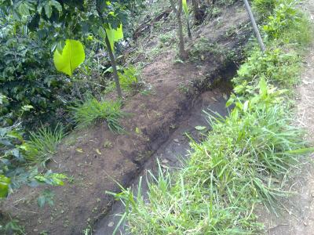

Water for livestock
As with feed ingredients, livestock water should meet the nutritional needs of the animal. An adequate and safe water supply is essential for healthy animals.
Introduction
Water is an essential nutrient for humans and animals. Clear and fresh water for humans and animals is getting a challenge more and more, and water quality and quantity concerns are becoming more important across the world. Water is required for the regulation of body temperature, as well as for growth, reproduction, lactation, digestion, metabolism, excretion, hydrolysis of nutrients, transport of nutrients and waste, joint lubrication plus many other functions.
The most important aspect of water as a nutrient is generally the quantity consumed. Depression of water consumption due to contaminants is more common than an imposed mineral imbalance. Some salts and other elements when found in water at higher levels may reduce animal growth and production or may cause illness and death. However due to their physiological adaptability many animals are able to ingest a wide variety of different types of water and survive.
As with feed ingredients, livestock water should meet the nutritional needs of the animal. An adequate and safe water supply is essential for healthy livestock and poultry. Water that adversely affects the growth, reproduction, or productivity of livestock and poultry cannot be considered suitable. Therefore all farm water supplies, either surface or ground, should be protected against contamination from microorganisms, chemicals and other pollutants.
Substances that originate on livestock farms and often contaminate water supplies include nitrates, bacteria, organic materials, and suspended solids. A high level of suspended solids and an objectionable taste, odor or color in water can cause animals to drink less than they should.
Rainwater management
Rainwater management is probably the most neglected and misunderstood aspect of livestock production in solving part of the problem. An intelligent land planning and rainwater management will help farmers enlarge their flocks of livestock to an extent which may now seem to be impossible.
Today, many thousands of hectares in Sub-Saharan Africa consist of impermeable paving, dreary detention basins, compacted soils, turf grass and landscaping that require an inordinate amount of money, energy and non-renewable resources to maintain. Where rainwater harvesting and sustainable ecosystems are the basis for the planning and design of livestock production systems, such systems and the native flora and fauna could flourish side by side.
Arid and semiarid areas are home to one-sixth of the world's population, most of whom are poor agro-pastoralists who depend totally on renewable natural resources for their livelihoods. The inhabitants of these regions are among the poorest people in the world. Their poverty is partly caused by inadequate supplies of water for crop, livestock and other enterprises. However, the shortage of water is not due to low rainfall, as is commonly perceived, but rather by a lack of capacity for sustainable management and use of available rainwater. The most critical management challenge is how to deal with rainfall variability - short periods when there is too much water and long periods of too little water. Better management of available rainwater could help to reduce the occurrence, and mitigate the impact, of droughts during dry periods or in places with low rainfall. The current approach to food security considers self-sufficiency at the household level and focuses on overcoming water limitations.
Subsistence producers who lack water give priority to minimizing risks at the expense of increasing productivity and profits. This is a strategic survival mechanism but it denies people the opportunities of building the capital resources required to
- Invest in new technologies;
- Participate in the market economy; and
- Protect against extremes of climatic and economic downturns.
The technologies and skills required to overcome the lack of water resources, and poor and extremely variable rainfall, although well known, are not available and widely used. As a consequence, water supplies for agriculture, drinking and sanitation, and the environment are critically low.
Poor access to water is among the leading factors hindering sustainable development in semiarid and arid regions. Approaches to overcoming this problem include technologies for enhancing the productivity of water in rainfed production, rainwater harvesting and precision irrigation. Techniques to improve rainwater management, such as bio-swales that allow rainwater to seep into the ground as it flows away from parking lots, porous pavements, rain gardens and perforated diffuser pipes to capture and slowly dissipate water, are all readily available. However, people need to be made aware of them and educated about them.
|  |
| Retention ditch |
| (c) Mette Vaarst
|
How much water do animals need?
Water consumption varies widely, depending upon physiological and environmental conditions, for example the type and size of the animal, if the feed contains much water (for example juicy grass), they need less to drink. If they are active, they need more, and if they are lactating, they clearly need much more. Likewise, weather conditions will influence their need for water: heat, humidity and wind will all influence on the water need.
- Water (and shelter) should be available at all times (except for camels, they can do with water every 5-8 days) and be clean and fresh.
- Remember that young animals also need water! Even when they are milk fed, it is not always fulfilling their needs for liquids, especially not if active and if it is warm or hot and dry, or maybe even windy.
The normal range of water consumption for adult animals has been summarized as below:
| Livestock type | Water consumption in litres/day |
| Camels | every 5-8 days as much as they can drink (up to 100 liter or one third of body weight) daily about 15-30 litres |
| Beef cattle | 35-60 per head |
| Dairy cattle | 30-80 per head |
| Horses | 24-36 per head |
| Donkeys/mules | Twice a day as much as they can drink (10-25) |
| Pigs | 15-25 per head |
| Sheep and goats | 5-20 per head |
| Chickens | 40-50 per 100 birds = 0.5 litre per bird |
| Turkeys | 40-75 per 100 birds = 0.75 litre per bird |
| Rabbit | 50-150 Millilitre (=0.1 litre) water per kilogram bodyweight (small cup) |
|
| |
| Water for livestock is critical for communities, which depend on their livestock as a source of livelihood. | Chick drinker |
| (c) ACT/Caritas/NCA/Mohamed Nureldin Abdallah
| (c) A. Wachira, KARI, Kenya
|

{kind=link}
{kind=link}
Water quality for livestock
As the origin of all waters is rain, most groundwater or surface water is satisfactory for livestock. Some water, however,is of poor quality resulting in poor performance and even death of animals.
- Excessive saline water, having a high concentration of dissolved salts, makes water unsatisfactory for livestock
- Nitrate content, alkalinity and other factors may also affect water quality for livestock
- In industrialized areas there is a risk that chemicals are contaminating the water. When chemicals like pesticides, herbicides or fungicides are used on crops, they can run of and contaminate surface water
Water is a very good solvent, and all natural waters contain dissolved substances. Most of these are inorganic salts, calcium, magnesium and sodium chlorides, sulphates and bicarbonates. Occasionally the salts are present in such high concentrations that animals do not thrive, become ill or even die. The various salts have slightly different effects, but these differences are of no practical significance. Thus, while sulphates are laxative, and may cause diarrhoea, their effect on animal seems no greater than that of chlorides, and magnesium salts seem no more of a problem than calcium or sodium salts. Further, the effects of the various salts seem to be additive, which means that a combination of salts seems to have the same effect as that caused by a single salt at the same total concentration. Research on the effects of saline drinking water on livestock has shown that, at high (but not toxic) salt concentrations, water consumption increases, although the animals may at first refuse to drink for a short time when given saline water. On the other hand, at very high salinities animals may at first refuse to drink for a few days, but then drink large quantities in one go, leading to sudden sickness or even death. Older animals seem to be more resistant to the harmful effects of salinity than younger animals. Anything causing an increase in water consumption, such as lactation, high temperatures or exertion, also increases the harmful effects of saline water. Animals seem to have the ability to adapt to saline water quite well, but abrupt changes in salinity may be harmful, while gradual changes are not. When they have an alternative source of water livestock will avoid excessively saline water. However, animals suffering the effects of saline water are known make a rapid and complete recovery when given water with a low salt content. Plus, salt is sometimes added to animal feed to regulate water intake. Special care to provide drinking water with a low salt content should be taken in these instances.
Nitrate-poisoning in cattle was first observed around 1900 and, since then, there have been many cases. As a rule, poisoning results from eating forages with a high nitrate content. The nitrates are not very toxic in themselves, but bacteria in the rumen reduce the nitrates to nitrites, which then get into the bloodstream. There the nitrites convert the red pigment, haemoglobin, which is responsible for carrying oxygen from the lungs to the tissues, to a dark brown pigment, methaemoglobin, which will not carry oxygen. When this conversion is about 50% complete, animals become distressed and short of breath, and when conversion reaches 80% or more, they usually die of suffocation. Non-ruminants may convert small amounts of ingested nitrate to nitrite in their intestines, but the amount so converted is not harmful. Under some circumstances nitrates in the diet may also interfere with the conversion of carotene to vitamin A, but an impressive amount of experimental data shows this to be of no practical significance. Further, the experimental evidence suggests that chronic nitrate poisoning does not occur in livestock, and that the young are no more susceptible to acute nitrate poisoning than are older animals. Nitrates are occasionally found at toxic levels in water. Nitrites are also often present, but not at levels dangerous to livestock. As a rule, water analyses include data on both nitrites and nitrates.
Experimental data on the effects of large amounts of sulphates in livestock drinking water are limited. Both sodium and magnesium sulphates are well-known laxatives. In humans, a sulphate content of over 250-600 ppm may have a temporary laxative effect, while over 700 ppm may have a persistent laxative effect. Research in South Dakota (USA) showed that water containing up to 3,000 ppm sulphates had no harmful effects on the rate or efficiency of weight gain or on faecal consistency, in gestating or lactating sows or on their litters up to 28 days of age. In weaning pigs, 3,000 ppm added sulphates did cause more scouring and less firm faecal consistency than in pigs receiving water without added sulphates, but the rate of weight gain and efficiency was essentially the same. Sulphates in drinking water should seldom be a problem for livestock if rations are adequately formulated. However, copper deficiency might be a problem with high sulphate levels in drinking water.
Most waters are alkaline, which is fortunate since, if they were acid, they would corrode pipes and plumbing. Only in a very few instances has water been found to be too alkaline for livestock. Alkalinity is expressed either as pH or as titratable alkalinity in the form of bicarbonates and carbonates. A pH of 7.0 is neutral, below that is acid, and above that is alkaline. Most waters have pH values between 7.0 and 8.0, which means that they are very mildly alkaline and, also, that they contain only bicarbonates and no carbonates. As the pH goes up, the waters become more alkaline, and at values of around 10, waters are very highly alkaline and contain carbonates. Most waters have alkalinities of less than 500 ppm, and are not harmful. Excessive alkalinity in water can cause physiological problems and digestive upsets in livestock. The level at which alkalinity becomes a problem and its precise effects have not been thoroughly studied. Therefore, the establishment of guidelines for levels of alkalinity in livestock drinking waters is difficult.
Waters with alkalinities of less than 1,000 ppm are considered satisfactory for all classes of livestock and poultry. Above that, they are probably unsatisfactory, although adults may not be harmed at concentrations of less than about 2,500 ppm unless the concentration of carbonates exceeds the concentration of bicarbonates.
Bacterial contamination in livestock drinking water does not usually cause problems. Most water consumed by livestock has some degree of contamination from being impounded in depressions, tracks, dugouts or ponds. However, producers should be concerned if farm water supplies become contaminated by bacteria. The source of contamination should be determined and eliminated, particularly if humans also consume water from the system. While there is no meaningful laboratory method to measure contamination in water for livestock, it should obviously be avoided. A reasonable effort should always be made to provide animals with a clean and sanitary water supply.
On rare occasions, water may contain or become contaminated with toxic elements such as arsenic, mercury, selenium and cadmium, or with radioactive substances. While these toxic elements may harm animals, the major concern is that an accumulation in meat, milk or eggs is unsafe for human consumption. Water needs to be analyzed for toxic elements if there is good reason to suspect that they are present in excessive levels.
Persistent organic pesticides contaminate most surface waters. However, the concentration is small (because of their low solubility in water) and they are not a problem for livestock.
Occasionally, heavy algal growths occur in stagnant or slowly flowing water bodies. Under some circumstances, a few of these species can be toxic. As there are no tests for these toxins at present, stagnant water should not be used for livestock.
Review process
- Draft by Infonet (Anne Bruntse)
- June 2013: Review and update by Gidi Smolders, Agronomist, co-founder orgANIMprove
Information Source Links
- Malesu, M.M., Oduor, A. and Odhiambo, O. J. (Eds) (2008). Green Water Management Handbook. Rainwater harvesting for agricultural production and ecological sustainability. Technical Manual No.8. World Agroforestry Centre. Nairobi, Kenya. ISBN 978 92 9059 219 8
- Teyssier, A. (2000). Establishing and managing waterpoints for village livestock. A guide for rural extension workers in the sudano-sahelian zone. Agrodok-Series No. 27. CTA. ISBN 9907246-90-2